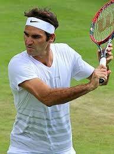

Roger Federer je švýcarský profesionální tenista považovaný za jednoho z nejlepších hráčů všech dob.
Více informací najdete na jeho oficiální stránce.
Chcete se dozvědět více? Navštivte další stránku.